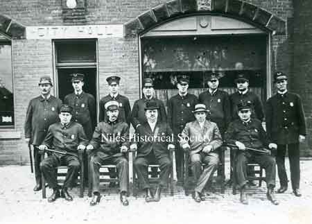

Ward-Thomas Museum


History of the Police Department
Ward — Thomas
Museum
Home of the Niles Historical Society
503 Brown Street Niles, Ohio 44446
Click here to become a Niles Historical Society Member or to renew your membership
Click on any photograph to view a larger image, click on image again to zoom into photograph.
History of the Police Department. Volunteer policemen protected the
Niles community from 1850 to 1864. That year Niles was incorporated
as a village with H.H. Mason as the first elected village
mayor. A police department was established at that time with a
Marshall at the head of local law enforcement. The 1875-76 Niles
directory listed Edward Seiple as an ex-Marshall. Very
early police officers included Jack Windsor, Tom Williams.
Bill Stack, Tom Nicholas and Link Round, just to
mention a few of them. As early as 1896 discussions were
held, wherever city officials or concerned citizens gathered,
regarding the appointment of a police chief. At the July 1899
city council meeting, the matter of appointing a chief of police
was brought to the floor, but no action was taken at that time.
During the years 1894-1899 no action was taken to appoint a chief.
April 1900 rolled around and E. L. Boynton was elected
mayor. On the 5th of April, city council passed an ordinance establishing
the salary of the chief of police at $50 per month. Then, on April
26th, council held an important session to consider appointing
a chief of police. Mayor Boynton’s recommendation, John
Bruder, was rejected on each of five ballots, with the same
vote -- 3 to confirm, 3 to reject. Another vote was cast and when
the result was the same as the five previous ballots, the subject
of a chief was tabled until a later date. Actually it was tabled
off and on for the next year as the deadlock continued. Following excerpt is from
Grace Allison’s pamphlet about the Niles Chiefs
of Police. During the first week of May 1901, just four months before President McKinley was assassinated, city council held its regular meeting; at that time Mayor Boynton presented his recommendation for policemen: John Neitheimer, chief of police’ William Turner and John Bruder as regulars. City council approved the mayor’s recommendation. At the same meeting, Mayor Boynton
named the following men for special duty on the police force:
James P. Lally, George Stein, Henry Reiter, and William
J. Davis; but councilman Williams asked that this matter
be deferred until council’s next meeting. On January 13th, during council meeting, the majority of the police committee recommended that Neithmeimer be reinstated; but their recommendation was rejected by a 3 to 2 vote. The results of the vote made it necessary to schedule another meeting; but before council could take care of that matter, Neithmeimer resigned. Lincoln (Link) J. Round was immediately appointed Acting Chief and in February 1902 he became Chief of Police. Chief Round passed the Civil Service exam with a grade of 100. In 1883 Congress had passed the Civil Service Act which created the foundation of the American Civil Service System. For instance, civil service positions must be filled from lists of qualified candidates in competitive examinations open to all citizens, and examinations are held for specific positions, as the need arises. Candidates are graded by points up to 100; and appointments are made on merit from the appropriate list of those who passed the examination without regard to race, religion, color, national origin, sex, or politics. When Link Round joined the police force in 1895, the police department did not have a patrol car. On one occasion Chief Round related how, when he arrested drunks, he often borrowed a wheelbarrow from someone’s yard to transport the drunks to jail. That was especially true when he caught the culprits some distance from the jail, such as in the vicinity of Wintergreen Hill, between Niles and Girard. Link Round served as chief from February 1902 until November 1903, when William Turner became Chief under Mayor W. F. Thomas. Turner served in this capacity until November 1907, when John Bruder was appointed chief of police under Mayor W. F. Thomas. Bruder was born in Osceola, Clare
County, Ireland September 28, 1867 and came to Niles with his
parents before he was one-year-old. In 1909 John Bruder was chief, Lincoln J. Round, night lieutenant; William Neiss, James P. Lally, Thomas Kelly, and Louis Pepe were patrolmen. John Bruder was the first police chief to die while in office; he died July 11, 1911 at his home on Hartzell Avenue. Bruder’s funeral was one of the largest funerals for an official held in Niles up to that time. All city offices were closed during the hours of his funeral; city officials, members of the fire and police departments, and city employees met at City Hall and attended Bruder’s funeral as a group. They marched from Bruder’s home and carried the casket to St. Stephen Church. After a Requiem Mass, a long cortege made its way to St. Stephen Cemetery. Pall bearers were Charles Crow,
Lincoln Round, Richard Neiss, Bernard L. Hogan, James O’Connell
and John J. O’Connell. Link was born in Niles in 1865. He joined the police department in 1895; he served as night patrolman and then as a regular patrolman. In 1902-03, Link was Niles Chief of Police and between 1903 and 1911 he was a lieutenant.The Niles police department, under Chief Round, achieved a reputation for cooperation and quick action, two factors that were unusual in a city the size of Niles. Chief Round and his department were commended for the aid they gave other departments in apprehending criminals or supplying needed information.” Chief Round served 17 years on the force retiring with a pension of $100.00 per month. |
||
| |
||
|
P01.1895 |
Postcard of Niles police officers: Tom Fitzpatrick, George Stephen, Jug O'Brien, Charles Nicholas, and Dick Neiss printed by Ward Drug Store from a McIntyre photograph. McIntyre photography was a downtown Niles business which took many historic images featured within this website. |
|
| |
||
|  P01.380 |
Early 1915 photograph of the Niles Police Deptartment. Seated left to right - Officer Williams, Officer Link Rounds, Mayor F.E. Bryan (1914-1916), unknown, Officer Fitzpatrick. Standing left to right: Officer Wilhelm Ludwig Neiss, Officer Charles Mullet, unknown, Officer Lally. Officer Charles Berline, unknown, unknown and Officer Charles Nicholas. “At this time, police were known as ‘Dickies’, hence Wilhelm Ludwig Neiss was known as Dickie Neiss”, Shirley Neiss Harris, granddaughter of officer Neiss. Wilhelm Neiss was born in Niles on November 14, 1863. |
|
|
|
||
P01.1631 |
1920 photograph of Niles Police Department. Standing L-R: Desk Sgt.
Jackie Jones, Joseph Meere, Charles A. Gilbert, 'Hooker'
Dale, Richard (Dick) Whittaker, William (Bill) Mullen. |
|
|
P01.1085 |
1914 Niles officials. (L) On the front of the picture
they are identified from L-R: (R) 1915 photo taken of Howard Ohl, Sanitary Police, in his city building office. |
PO2.638 |
| |
||
| A military funeral for Kenneth Davis, killed in action in World War I. This is taken on Second Street with the Niles Police in the foregound. PO1.2073 To discover the streets named after WWI veterans killed in action, Click here: https://nileshistoricalsociety.org/w1vet.htm |
The “Blue Knights” of the Niles Police force, as shown here, were always at the head of many parades that were organized for every public occasion. Leading a parade down East State Street toward the curve from South Main Street.Picture circa 1915. P01.382 |
Members of the Niles Athletic Club. Seated: Davy Smith. Standing: unknown, Bill Pritchards, unknown, Police Chief Nicholas, Billy Thomas, unknown, unknown. Mascot: Jacky Phillips. P01.1896 |
P01.369 |
Two different views of the Niles City Building, built in 1895, which housed the horses and fire apparatus with the fire and police departments on the first floor. The second floor was for council and city officials offices and a large meeting room. The color postcard shows that only the front had doors for the fire department. In the black/white image, doors have been added for the fire department on Franklin Alley. |
S01.378 |
In 1936 with Charles A. Nicholas as chief, the police department sponsored a Leap Year Police Ball to raise funds. There were seven men on the force including the chief and they needed equipment. The Niles guns were obsolete and the department had no machine guns and every patrolman needed new uniforms also the department’s gas bombs were out-dated. The Leap Year Ball was held at the McKinley Memorial with Emerson Henry’s Orchestra. Chief Nicholas died of a heart attack in 1947 at his home on Maple Ave. Mayor Fisher characterized Chief Nicholas as a true gentleman in every respect and a very fine friend of everyone. Mayor Fisher appointed Charles S. Berline as acting chief. When the Civil Service test was given, Chief Berline made the highest score on the exam. Over the years there were many changes in the scope and problems of the city's police department, from the early years when the department's only equipment was an old horse-drawn paddy wagon to the late 1920s when bootlegging and all that went with it was the big problem. When Berline became chief, traffic had grown to be the major problem. During Berline's tenure, the Niles Police Department acquired new motorcycles, a modern radio system, new patrol cars every several years, an increase in manpower with three sergeants and the establishment of three shifts each day, with one of the sergeants in charge of each shift. Also, the position of a department laborer was created in 1948, and a separate room was made available for female prisoners. Berline was responsible for the development of a fingerprinting and crime detection lab. Matt J. McGowan was appointed Acting Chief when Chief Berline died. McGowan had enlisted in the Navy while a Junior in high school and was the first person to leave Niles for service in that war. Serving as a radio operator, he crossed the Atlantic nine times before receiving an honorable discharge. During the time McGowan was in the Navy, he won the boxing Atlantic Fleet championship in the 147 pound division. After returning to Niles and during his days as a patrolman, McGowan gained national recognition for his training of boxers. He organized and maintained a gym and developed a physical education program for local boys and over a decade of time, he cared for more than 80 boys. Several top boxers were trained in McGowan's program. McGowan was also an extremely capable police officer. During W.W. II, he worked closely with the FBI on subversive activities. Chief McGowan died April 5,1957 of heart failure; he was the fourth Niles police chief to die while in office. John A. Ross served as
Acting Chief upon McGowan’s death until May 25, 1957 when
he was appointed Chief of Police. Ross had served under three
chiefs, all of whom died while in office. Ross joined the police
force in 1946 as a patrolman on the midnight shift; the police
station was on West Park Avenue at that time and Ross earned $2,100
annually. He checked parking meters and issued offenders tickets
that carried a fine of $1.00 each. Those parking meters were eliminated
in Niles during the 1970s. |
||
The new city administration building was built in 1928 on West State Street allowing for the renovation and expansion of the Police and Fire Departments in the old city building to take place in 1931. Photo 1974. PO1.178 |
Command center of police station
in 1974. |
The demolition of the original City Hall Building that housed both the police and fire departments that was built in 1895. SO3.116 This occured during urban renewal in 1976.
|
|
|
||
John Scott and Police Chief Ross raising the flag at the new Safety-Services Complex on East State Street. Patrolman John Scott and police Chief Ross inspect a bullet-ridden car that tried to evade capture. 1969. |
Officer John Scott working with the students on the School Safety forces. Photo 1968 Injury Light located at the side of Robbins and Vienna Avenues. Pictured are John ‘Burgandy’
Marsico, Glen Smith, Police Chief Ross and John Scott. |
Officer John Scott wearing the uniform of a motorcycle policeman in the 1950s Police chief Ross and officer Bernie Profato inspect the new tear gas equipment. |
|
|
||
Construction of the new Safety-Service Complex which houses not only the police and fire departments but also the city court. S11.235 |
Construction of the new Safety-Service Complex which houses not only the police and fire departments but also the city court.S11.332 |
A new Safety-Service Complex which houses not only the police and fire departments but also the city court which opened in 1977. |
|
|
||
|
|
||


{kind=link}
{kind=link}
{kind=link}
{kind=link}
{kind=link}
{kind=link}
{kind=link}
{kind=link}
{kind=link}
{kind=link}
{kind=link}
{kind=link}
{kind=link}
{kind=link}
{kind=link}
{kind=link}
{kind=link}
{kind=link}
{kind=link}
{kind=link}